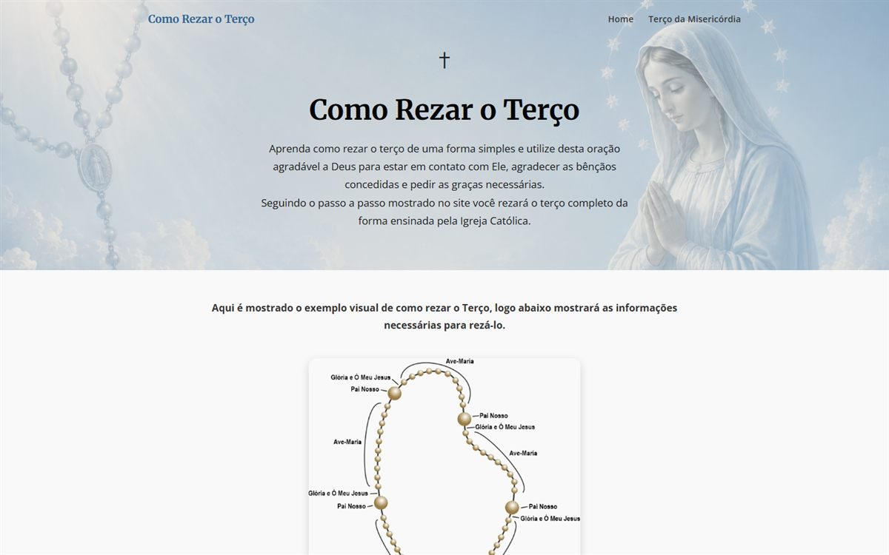

01 · Live
How to Pray the Rosary
The rosary has many prayers, and their order can confuse people who are just starting. This site, written in Portuguese, turns that sequence into simple steps.
- How it works
- Prayers open and close with a click, which keeps the page short. The mysteries are generated from a JavaScript list that includes their days of the week, and the image changes with the selected mystery.
- Built with
- HTML, CSS, JavaScript